✈️ INS'Aérien Club
Founded and managed an open-access FPV drone club at INSA Rennes: designing fast quadcopters, tutoring members on flight controls, and capturing events both on and off campus.
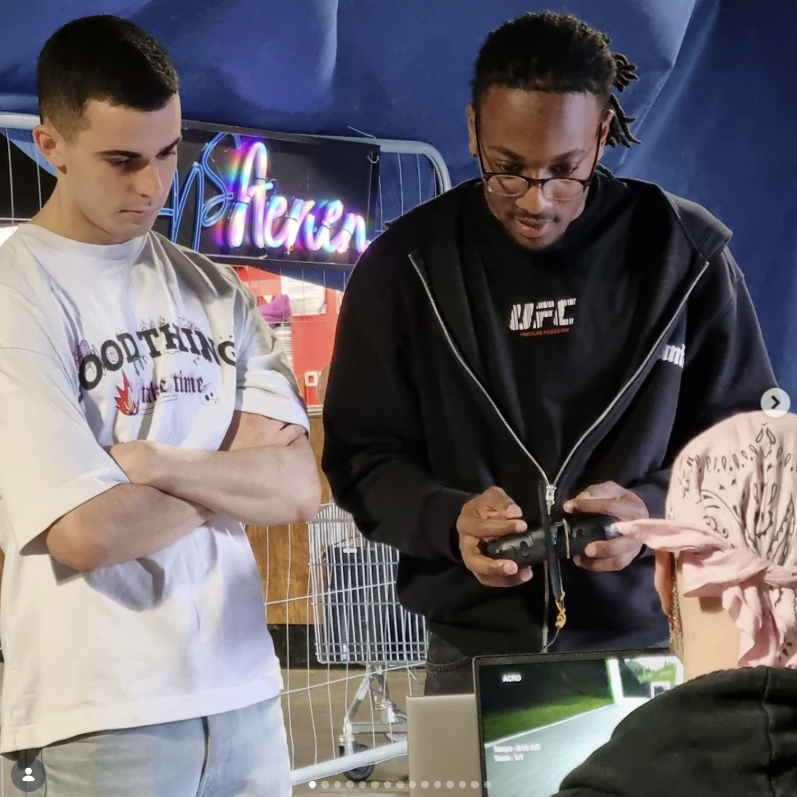
Welcome to my portfolio: a brief introduction and a selection of projects showcasing my work in robotics and AI.
This page is currently being updated.
Even though I am currently focusing on robotics and AI, I chose to pursue a Mechanical and Control Engineering degree (GMA) at INSA Rennes. I truly believe that having a solid engineering foundation allows me to stand out from purely computer science profiles. The various internships I have completed summarize the core scope of GMA well.
At XSun, I applied finite element analysis (FEA) and materials science. At ADDLAB (Decathlon), my focus was on advanced 3D modeling and additive manufacturing. During my internship at Metallicadour (later acquired by Safran) and through my academic curriculum, I mastered the operation and control theory of industrial robotic arms. Finally, my latest R&D internship at Scalian is detailed further down this page.
Additionally, my curriculum provided me with a strong foundation in advanced control theory and physics, including Noise, Vibration, and Harshness (NVH), Partial Differential Equations (PDE), and advanced PID control concepts (such as soft sensors).
Finally, my fifth and final year is dedicated to an international academic exchange and a final internship. I learned a new language from scratch in a few months and had the opportunity to study in Brazil, focusing mainly on machine learning, mathematics, and programming—a truly enriching experience.
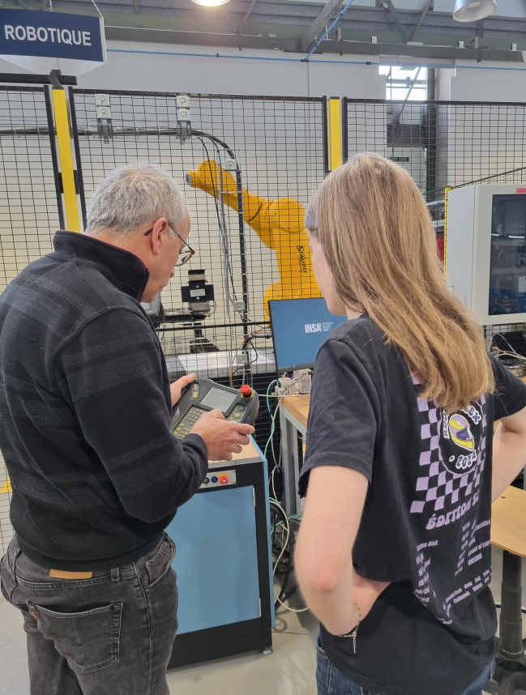
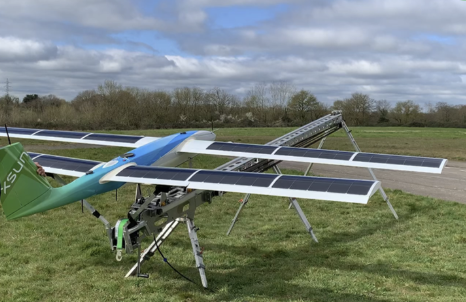
Founded and managed an open-access FPV drone club at INSA Rennes: designing fast quadcopters, tutoring members on flight controls, and capturing events both on and off campus.

Embedded systems programming in C++ for the INSA Rennes robotics club, where I discovered the power and efficiency of low-level programming.
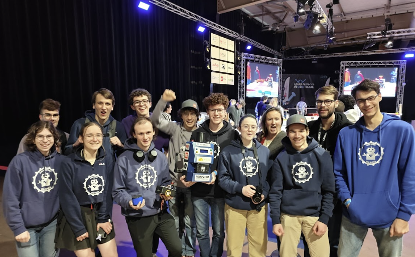
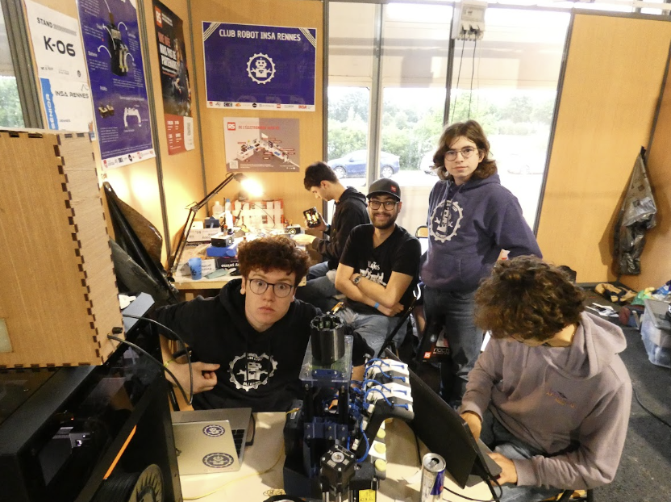
Borrowed a mobile robot from the Computer Science department to teach myself ROS 2 programming hands-on. This served as my introduction to the ROS ecosystem.
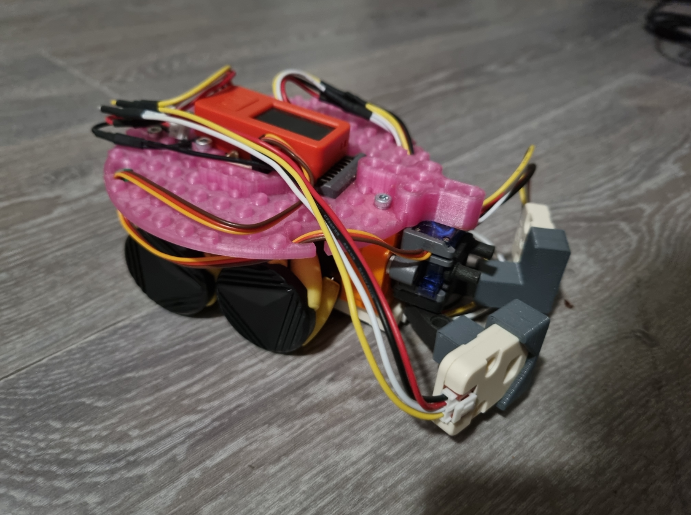
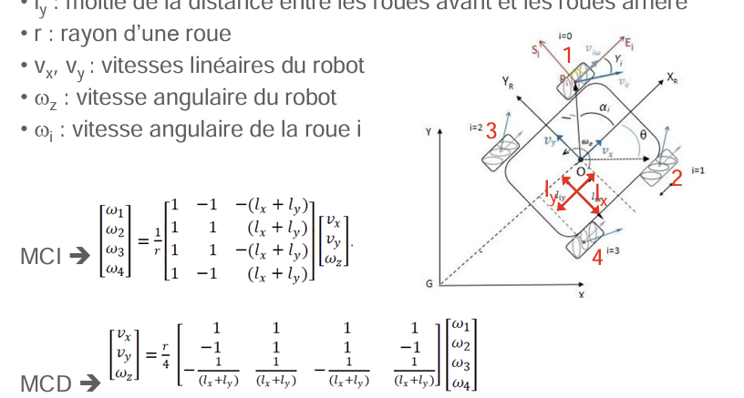
Implemented a computer vision model that learned to classify objects, following a comprehensive machine learning curriculum.
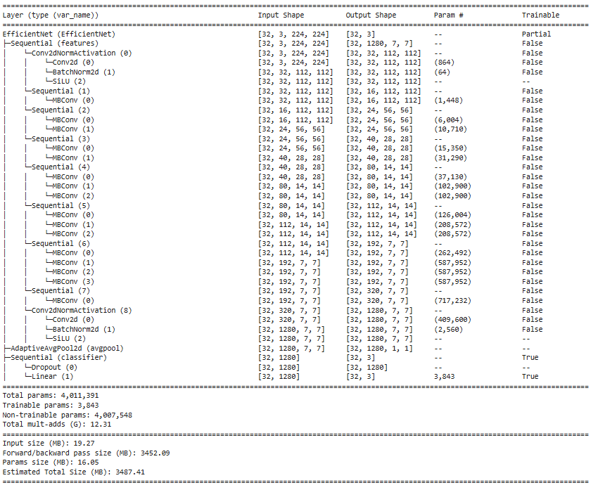
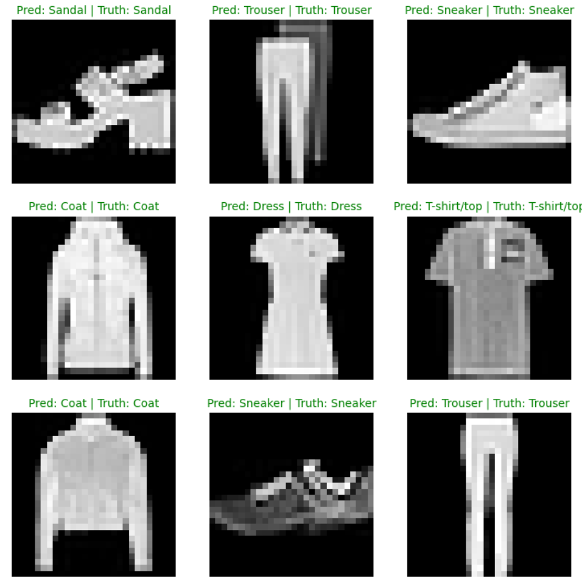
During my R&D internship at Scalian, I developed and continue to enhance an end-to-end Reinforcement Learning (RL) pipeline to autonomously guide a physical robot (Duckiebot DB21J with an embedded Jetson Nano) using NVIDIA Isaac Sim, Lab, PyTorch (especially PPO), Docker, and ROS.
During this work, I had the opportunity to tackle several challenges, including the Sim-to-Real gap, complex infrastructure setup, and classic reward hacking issues. Beyond these, my primary goal was to implement a CNN to transform how the robot perceives its environment. To achieve this, I used an Actor-Critic architecture leveraging a NatureCNN feature extractor. Exploring this solution was particularly engaging, from improving yellow line detection to boosting overall driving performance. One of the most rewarding aspects was modifying the input channels to stack multiple consecutive frames, allowing the model to perceive velocity and acceleration rather than just a static snapshot. This approach was directly inspired by the landmark research paper "Human-level control through deep reinforcement learning", where frame stacking was introduced for Atari 2600 games because a single image couldn't reveal object trajectories.
The real thrill was watching the physical robot navigate complex maneuvers completely on its own, powered solely by a policy learned in a GPU simulator. Uniting deep RL, 3D physics simulation, embedded ROS, and MLOps was an absolute highlight of my engineering journey!
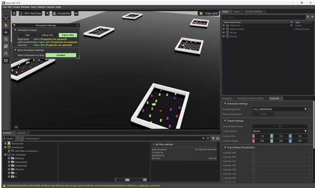
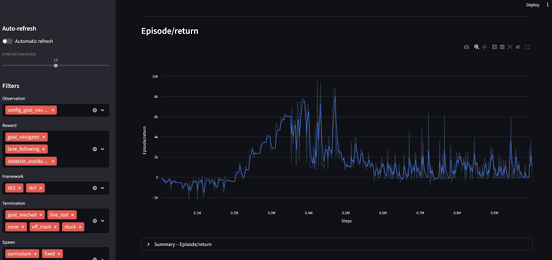
This isn't my most impressive project technically, but it is definitely one of those I'm most proud of. Over two years, whenever I came home for holidays, my grandfather and I worked together to convert a van from scratch so I could go on outdoor adventures. I am fond of sports, but what I love most is the call of the wild. Among my friends, I'm known for sleeping outside in -15°C weather or camping under a kayak to escape pouring rain.
While my CV highlights my structured technical side, people generally describe me as a highly sociable and cheerful person. My best memories come from these raw outdoor experiences—whether spending 5 days hiking around Belle-Île and interrailing across Europe with friends, or trekking alone for 4 days in the Dolomites sleeping under the stars.
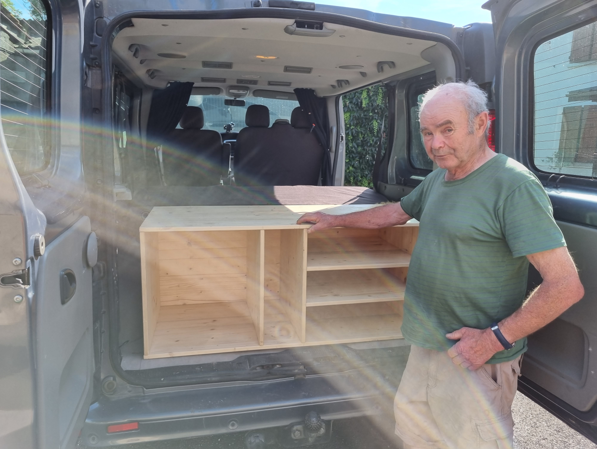
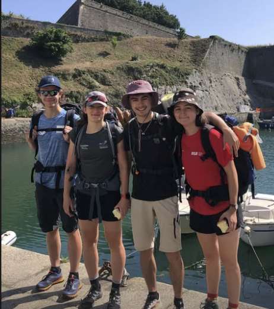